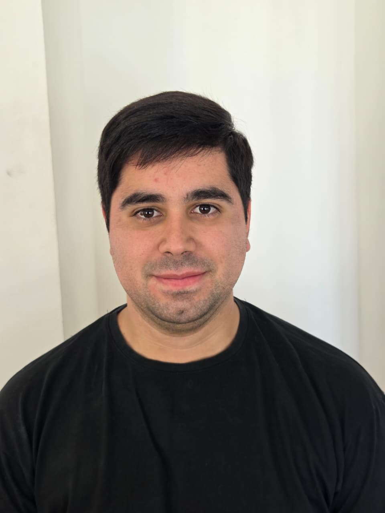

Soporte Técnico IT · Help Desk · IT Support
Técnico en Análisis de Sistemas con formación sólida en hardware, software y redes. Resuelvo problemas técnicos con metodología, atención al detalle y orientación al usuario. Inglés B2. Basado en La Plata, Argentina — disponible para trabajo presencial o remoto.

Técnico en sistemas con enfoque en resolución de problemas y soporte de usuarios
Soy Simón, técnico en Análisis de Sistemas con experiencia práctica en hardware, software, redes y diagnóstico de fallas. Me formé resolviendo problemas reales — desde reparación de equipos hasta configuración de entornos de trabajo — y tengo mentalidad metódica para identificar la causa raíz de un problema antes de aplicar soluciones.
Manejo herramientas de gestión como Jira para seguimiento de tickets y documentación. Tengo experiencia con entornos Linux y Windows, scripting en Bash y Python para automatizar tareas repetitivas, y familiaridad con redes TCP/IP.
Mi inglés B2 me permite atender usuarios en inglés de forma escrita y oral sin dificultades. Soy ordenado, me comunico con claridad y entiendo que el soporte técnico es ante todo un servicio a personas.
Herramientas y conocimientos aplicables en roles de soporte técnico e IT
Base técnica sólida con experiencia práctica en proyectos reales
Proyectos que demuestran capacidad de diagnóstico, documentación y resolución de problemas
Disponible para posiciones de soporte técnico, help desk e IT support